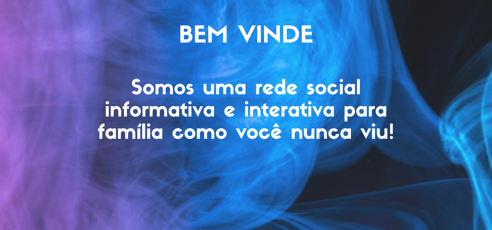
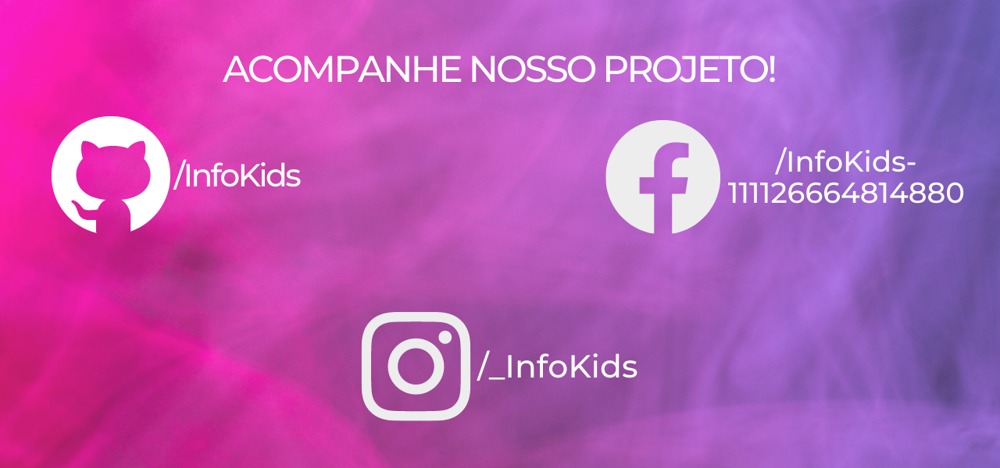

Baseado nos Objetivos de Desenvolvimento Sustentável 16.2 - "Acabar com abuso, exploração, tráfico e todas as formas de violência e tortura contra crianças". A ideia é usar as mídias sociais para promover o conhecimento, visibilidade e conexão, entre pais, crianças, profissionais da educação e também psicólogos, para que através das informações e interações, a sociedade e o público alvo possam ser conscientizados sobre o assunto e assim haja diminuição na incidência de casos de violência infantil.
Através da ODS de número 16, nos motivamos a criar uma rede informativa e educativa, para a orientação com os riscos causados contra as crianças.
Nosso objetivo é a informação para a sociedade como um todo, para que haja diminuição da violência infantil.
Nosso trabalho é realizado com transparência, cuidado na abordagem e aprendizado constante com aqueles que trabalham conosco.